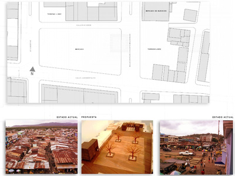
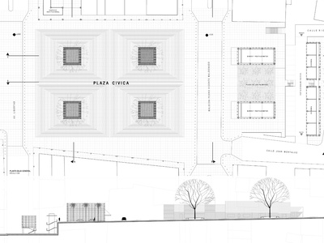

(Se describe en la primera lámina).
Proyecto: Patricio Guerrero. Equipo de apoyo: Cristian Brouwn, Héctor Paredes y Raúl Avilés. Área de proyecto: 10.000 m². Año de proyecto: 2004. Ubicación: Esmeraldas, Ecuador.